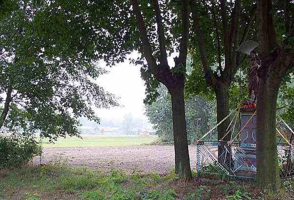
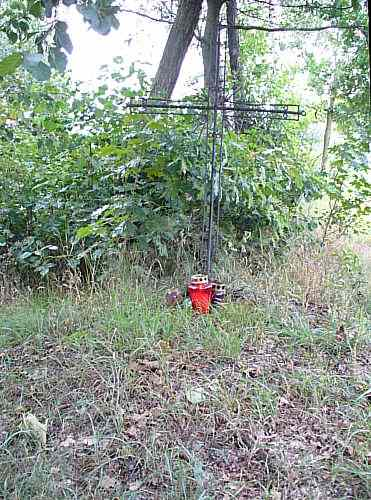

10. Żarówka. Aby dopełnić całości tematu, kilka zdań o losie tych co siłą wtargnęli do Polski w 1939r i przez ponad 5 lat siali śmierć i zniszczenie. Dla wielu żołnierzy Wehrmachtu ten rejon działań wojennych oznaczał niechlubny koniec służby pod rozkazami szaleńca - Hitlera i zarazem koniec życia. Pochowani zostali pośpiesznie, bez stosownego rytuału, w miejscach gdzie dopadła ich sprawiedliwa kula.
Po niemieckiej stronie frontu od sierpnia 1944 do połowy stycznia 1945 roku. Na rubieży od Wisły do Pilzna broniły się oddziały LIX Korpusu 17 Armii w składzie 371, 359 i 544 Dywizji Piechoty Wehrmachtu. Odcinek od Pilzna do Jasła był broniony przez XI Korpus 17 Armii w składzie 78 i 545 Dywizji SS. W pierwszych dniach ofensywy w dniach 12/13 stycznia niemieckie dowództwo przerzuciło 359 dywizję z rejonu Żarówki nad Wisłę na zagrożony odcinek przez bardzo silne uderzenie Armii Radzieckiej z przyczółka sandomierskiego.
Czas jaki upłynął od tamtych wydarzeń pozacierał wiele istotnych faktów. Musimy jednak pamiętać o tamtym okresie, ponieważ jest to prawdziwa historia, dotykająca namacalnie pokolenia, które powoli odchodzą. Następne pokolenia winny zachować świadomość o niebezpieczeństwach jakie mogą im zagrozić jeśli gdzieś kiedyś, ponownie "zbudzą się upiory".
 